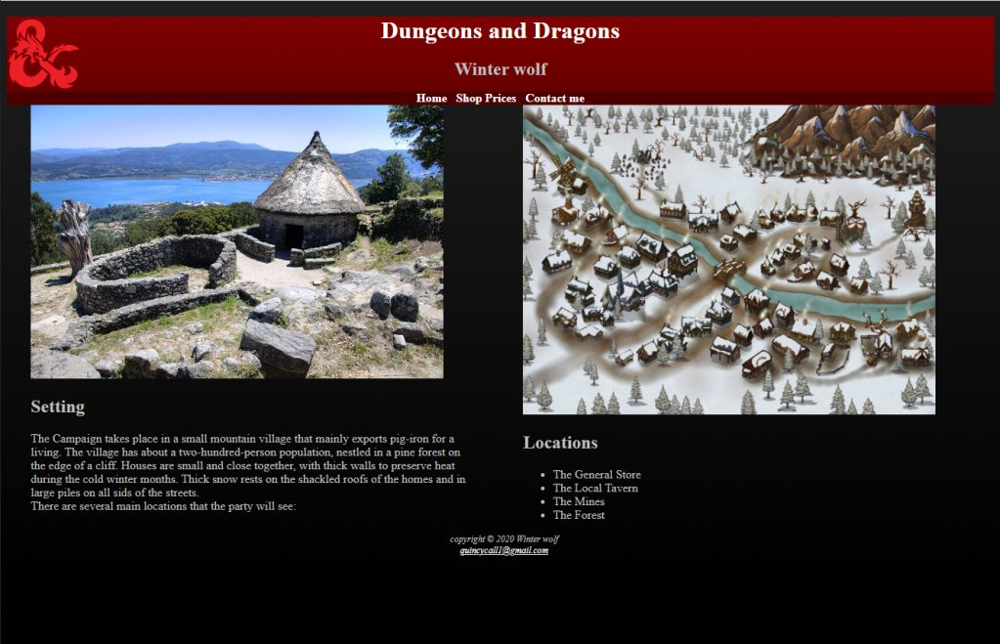

HTML/CSS
SDEV 1002
Overview:
In this class I went over the fundamental principals of how HTML and CSS are used. I then practiced them by creating potential websites using Visual Studio Code. There were two main websites that I worked on. One was called Pacific trails resort and involved following detailed requirements to make the site look exactly like intended. The other was more free form and allowed me to pick the purpose of the site as long as it demonstrated techniques I had learned.
Website examples:
Here are some screenshots from one of my final projects:
Here are some screenshots of the HTML and CSS in use:
Here are screenshots from my other final project
And here are some of the HTML and CSS files that they required:
Course reflection:
This was both very fun to learn and very useful. HTML and CSS are both really allowed me to have complete control of the look and feel of a website I am making. I know how to create websites, link them to each other and even upload them to the internet.